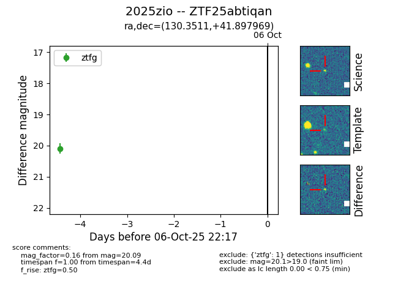

FINK: ZTF25abtiqan
Lasair: ZTF25abtiqan
ALeRCE: ZTF25abtiqan
TNS: 2025zio
YSE: 2025zio
ZTF25abtiqan (ztf,fink)
2025zio (tns,yse)
equatorial (ra, dec) = (130.3511,+41.89797)
galactic (l, b) = (179.3938,+37.61181)

last ztfg=20.09
1 ztfg detections